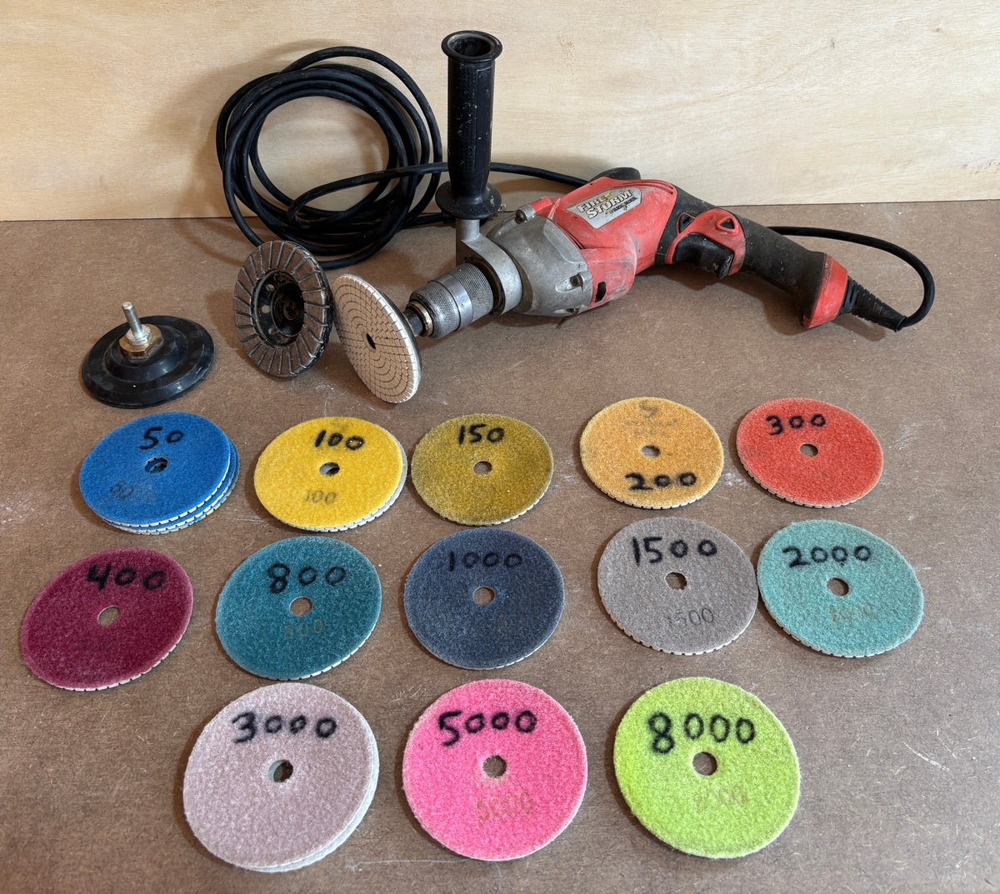

The polishing pads are somewhat used, but still have some life. There is one each of most of them, but a few extra of the 50 and 100 grit versions.
Includes two backing pads (the piece that you velcro your polishing pad onto), each with their own arbor (the shaft that chucks into the drill).
The drill is a Black-and-Decker reversable, variable-speed, with a loooong cord.
Also includes a "turbo grinding cup", which is a really coarse diamond grinder for doing a first-smoothing of concrete and/or stone (something like 20-grit I'd guess). It also has its own arbor.
!! ADD IN THE WIRE BRUSH AND FIBER BRUSH
More info: